JetFuel Home
Deepak Dhayatker - (deepakcdo@gmail.com)
JetFuel - Explorer
JetFuel Explorer is the first visualization toolset that is being developed. Today it is an excellent query tool which can view data on a very fast bus. Think of it as Aqua Data Studio or Squirrel that developers use to query databases, where you can connect and query/update tables or views. Additionally you can view messaging stats an its history in a graph or table form.- JetFuel - Explorer
View SOW and realtime updates
JetFuel showing data in TextArea

JetFuel showing records vertically

JetFuel showing records horizontally

JetFuel Showing records in a Tree

JetFuel Showing data in Data Sheet
This allows data to be viewed side by side. This is very useful to compare data from different topics or in the future differnt servers.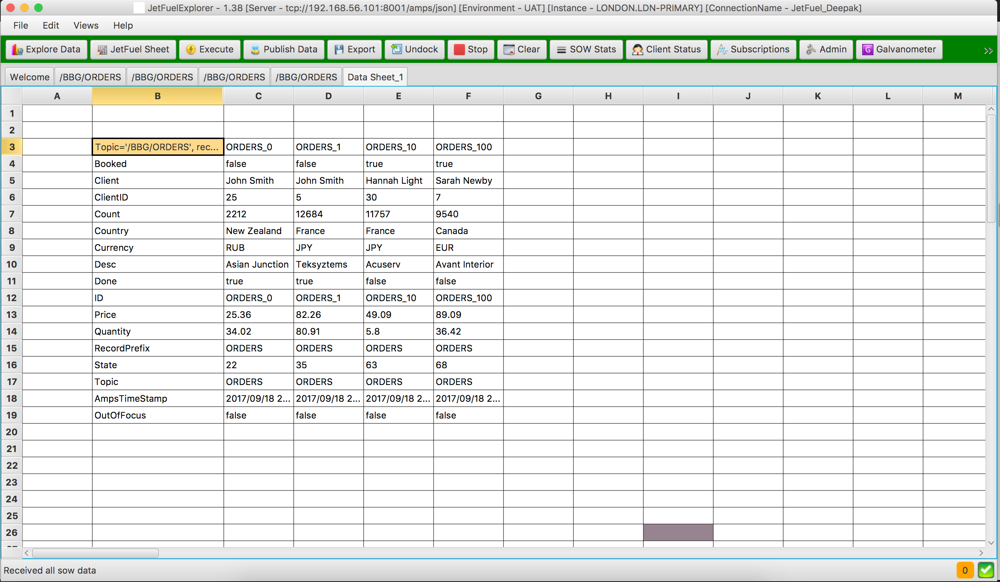
View journals and realtime updates
View journals in horizontal table
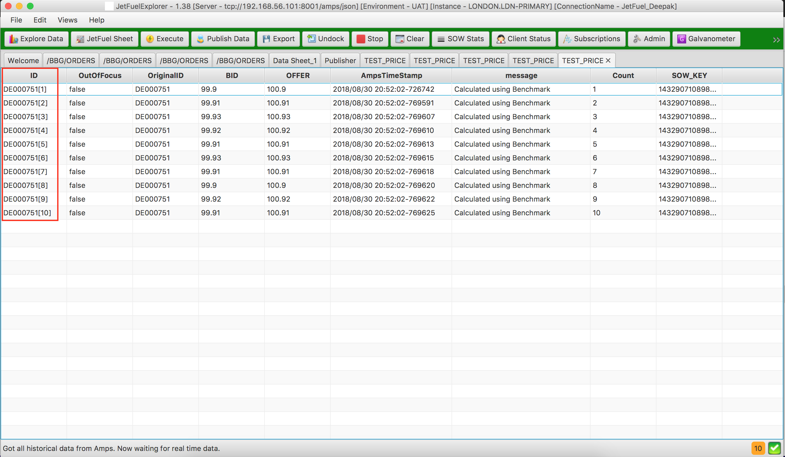
View journals in vertical table
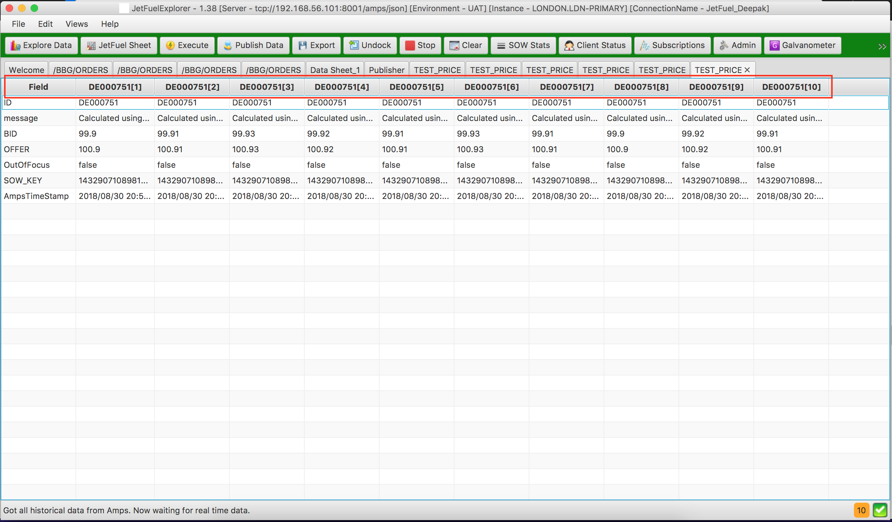
View journals using JetFuel selector
Here you slide the scrollbar at the bottom to see all the changes on a record.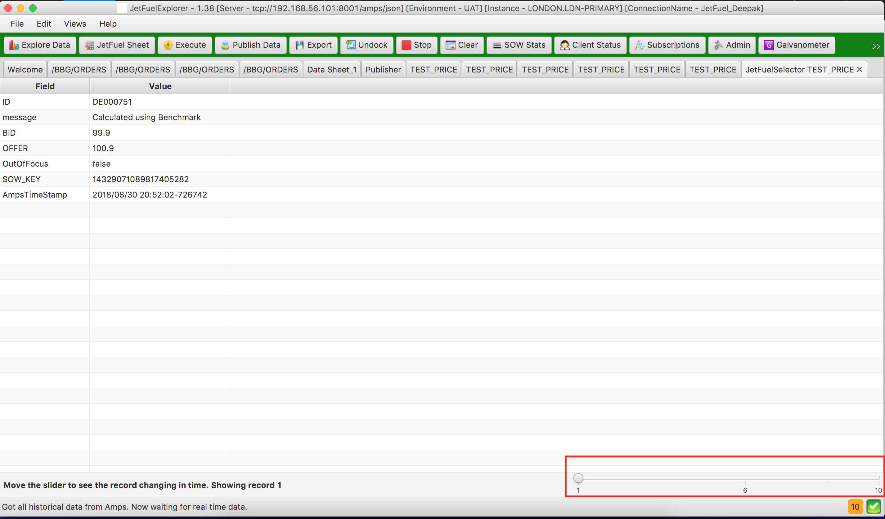
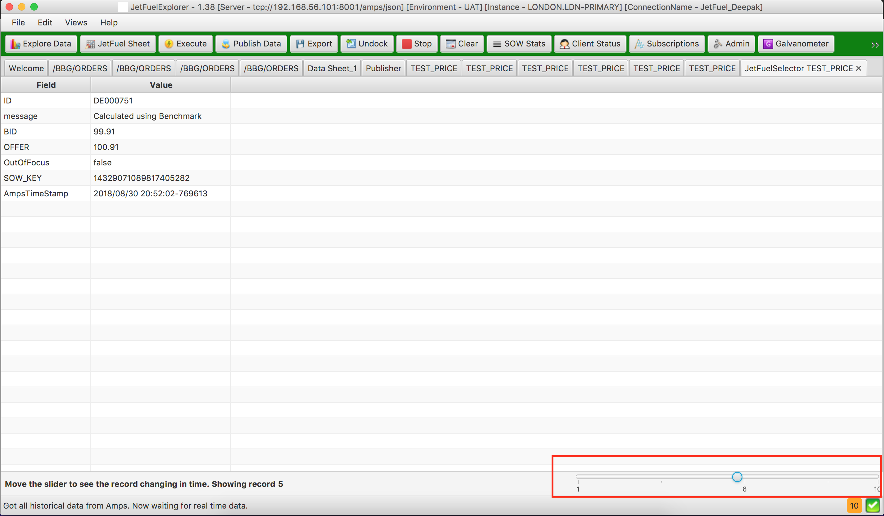
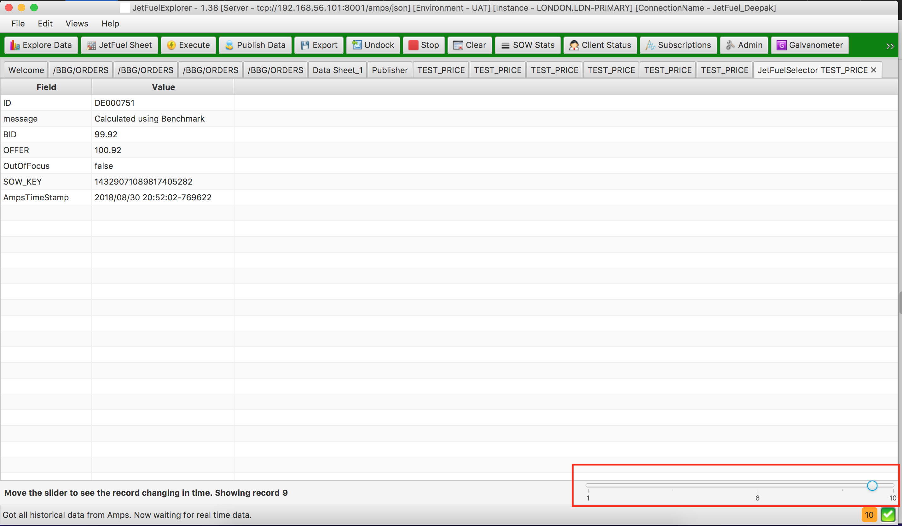
Publish data
JetFuel can publish, delete, update data easily. This is very useful in dev and test environments especially when you are creating complex views or replicating a bug. This functionality can be hidden for certain environments. Output from the bus is displayed in the bottom panel which is really useful to debug issues.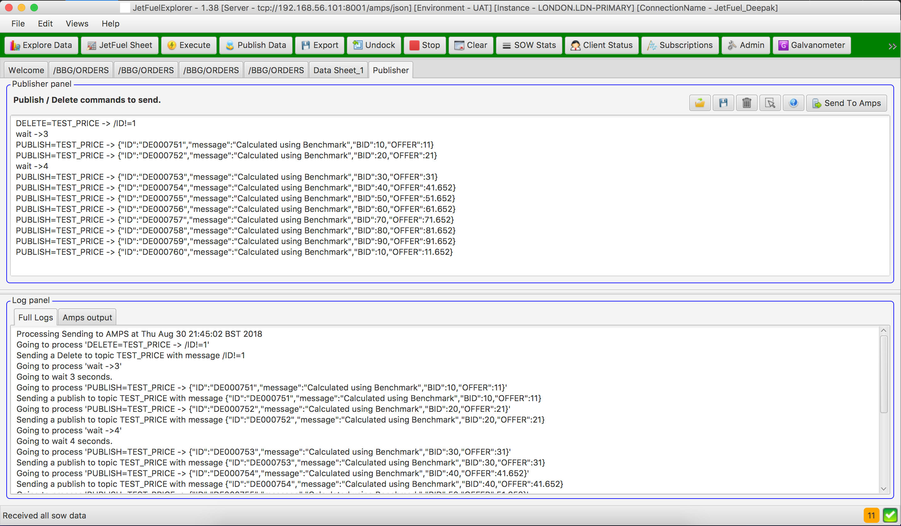
Capture and replay journals
JetFuel allows you to capture and replay journal files to replicate behaviours or do performance testing.Capture journals
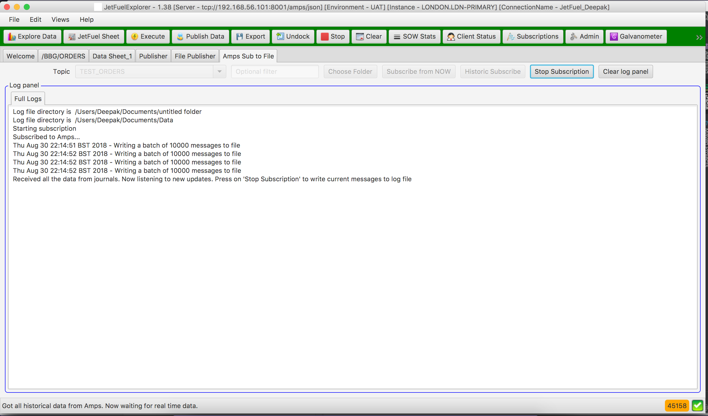
Replay Journals
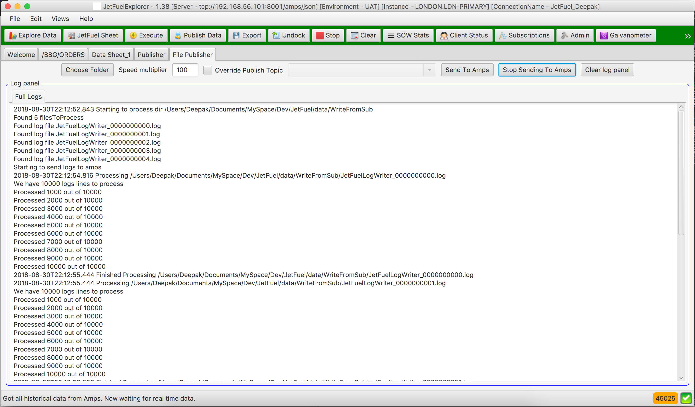
JetFuel Features
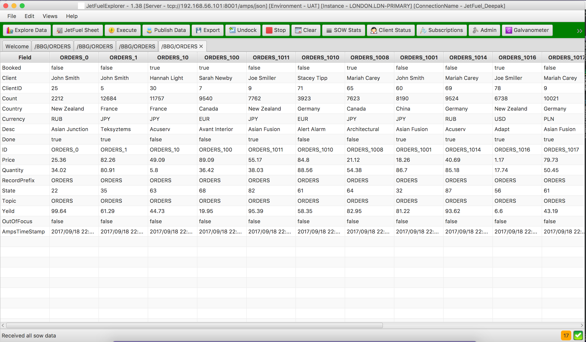
Choosing data using record IDs.
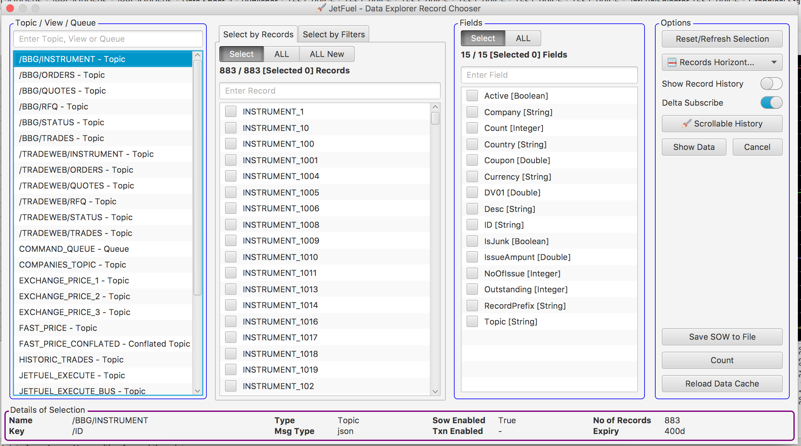
Choosing data using filters
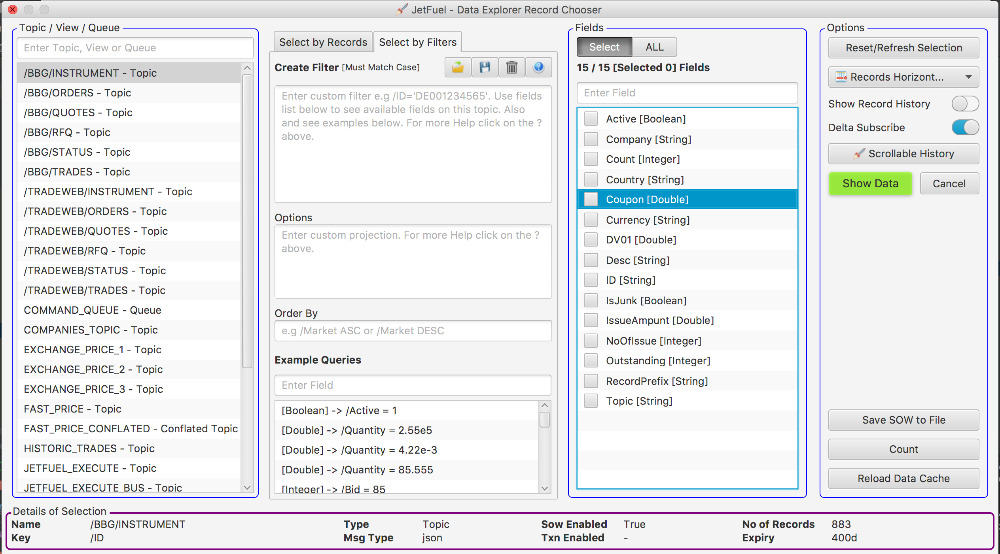
JetFuel Showing some server graphs
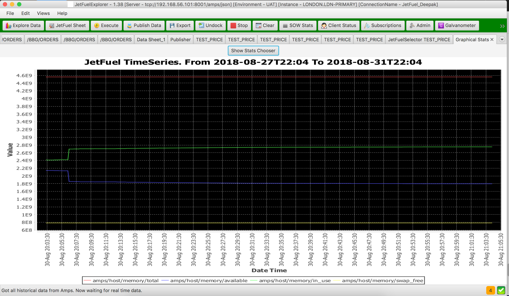
JetFuel views
JetFuel has a few views to display the following- SowTopic and its status
- Views and its status
- Current client connections
- Current subscriptions
- Current replications
JetFuel - DashBoard
This view is not completed. This is gives a system level view of JefFuel and its components. You can see every component running on JetFuel. Here you can see the fast brokers and how they are connected to each other. All publishers and subscribers that are connected or missing from JetFuel are also shown.Below is how JetFuel Dashboard will show connected publishers, subscribers and users. Light grey icons indicate missing users or publishers

Notes
About queuesWhen you subscribe to a queue, JetFuel only does a peek so we don't consume the
message.
As we are peeking a queue the view does not update.
There is no IDs on Queue so select "ALL" or "ALL New" in the data chooser.
RecordId does not come up DataChooserExplorer as queues don't have ID field
Since queues don't have ID field you can only show the data in a text area.
As we are peeking a queue the view does not update.
There is no IDs on Queue so select "ALL" or "ALL New" in the data chooser.
RecordId does not come up DataChooserExplorer as queues don't have ID field
Since queues don't have ID field you can only show the data in a text area.